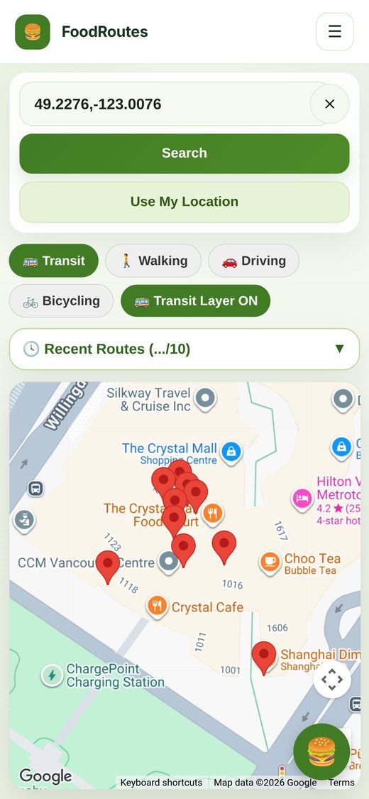
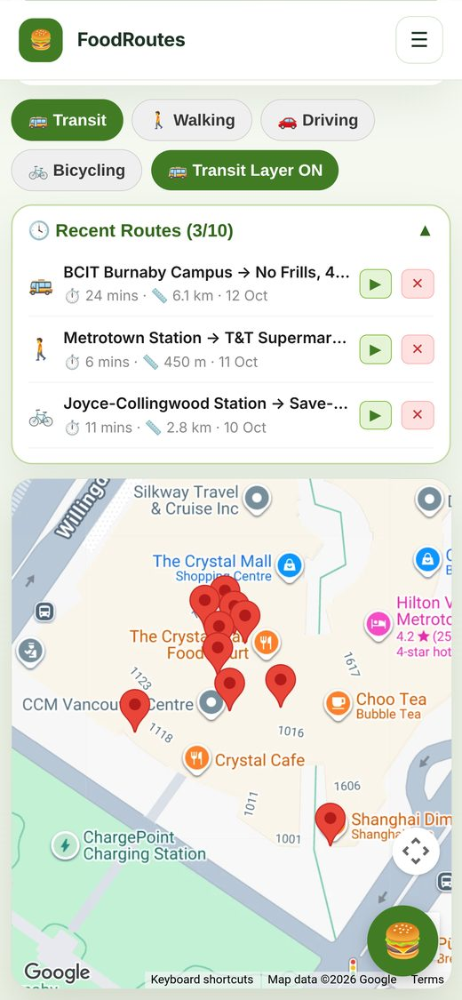
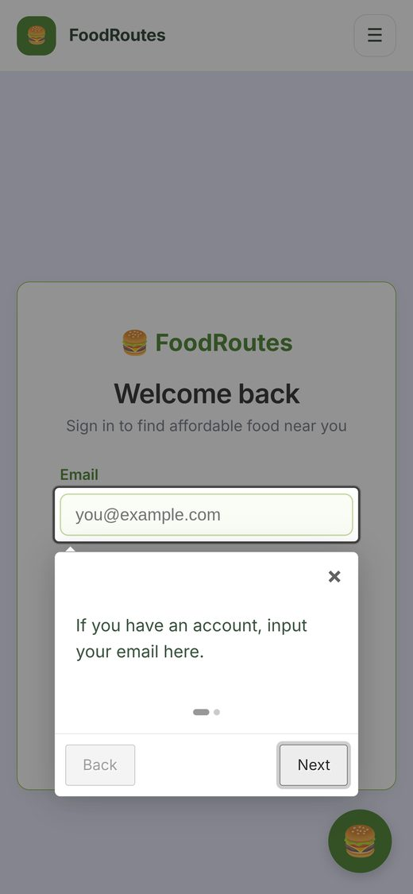
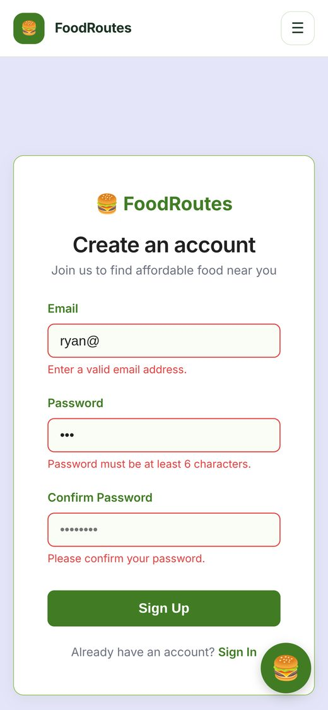
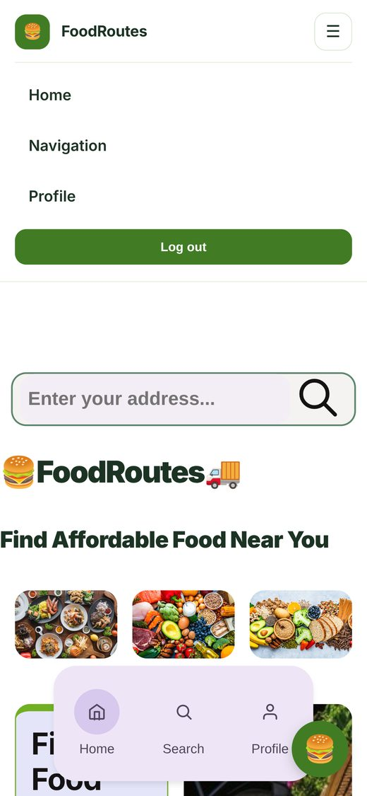

Overview
FoodRoutes helps people reach affordable food without a car. It finds grocery stores nearby, filters them by how expensive they are, and gives directions there by transit, on foot, by bike, or by car. It's a mobile web app, designed for the phone you'd have in your hand at a bus stop.
We built it as a team of four in BCIT's COMP 2800 projects course (Team DTC 09), over about four weeks in spring 2026, using React, TypeScript, Supabase, and the Google Maps JavaScript API.
My role
I built the parts of the app that move people: the navigation map and the accounts flow. That's about 38% of the final code, including three-quarters of the map page, the app's main screen.
- The navigation map: directions in four travel modes, saved routes, "Use my location", and almost all of the map's interface
- Accounts: the Supabase client, login and sign-up with validation, a guided first-visit tour on both, and protected routes that send signed-out visitors to log in
- Navigation bar: the responsive navbar that collapses into a menu on phones and updates the moment someone signs in or out
My teammates built the store search and price filter, the map setup, the AI food chatbot, the landing page, and the profile page with its accessibility settings.
The app

Nearby stores around Metrotown, with the travel modes and transit layer above.

Up to 10 per user, each one replayable or deletable. Shown with example routes.

First-time visitors get a step-by-step walkthrough of the form.

Each field says exactly what's wrong before anything is sent.

On phones the links fold into a menu that knows if you're signed in.
What I built
Directions in four travel modes
Pick a store on the map and FoodRoutes draws the route there with Google's Directions service, along with the trip's time and distance. Transit is the default, because that's who the app is for, and one tap switches to walking, cycling, or driving. Each mode has its own colour, and a transit-layer toggle shows the bus and SkyTrain lines underneath.
Saved routes
Any route can be saved to the signed-in user's history in Supabase. The list keeps the 10 most recent: when it's full, the oldest is removed before the new one goes in, so it never grows without limit. Tapping a saved route restores its travel mode and redraws it; each one can also be deleted.
"Use my location"
One tap reads the phone's location, centres the map on it, turns the coordinates into a readable street address for the starting point, and runs the nearby-store search straight away.
Accounts that guide you in
Login and sign-up run on Supabase Authentication. Sign-up checks the email format, a minimum password length, and that both passwords match, and shows each problem under its own field. Both pages open with a short guided tour (intro.js) for first-time visitors. Protected routes check the session before rendering and send anyone signed out to the login page.
A navbar that follows the session
The navbar listens for Supabase's sign-in and sign-out events, so its links switch between "Log in / Sign up" and "Profile / Log out" instantly, without a page reload. On phones it collapses into a menu button.
Tech stack
Working as a team
- Each of us worked on our own feature branch, merged into a shared dev branch before release
- We split the app by feature, so the map, accounts, chatbot, and profile could move in parallel without stepping on each other
- The app was deployed on Vercel. The course's Supabase project has since been retired, so the live demo no longer signs in; the code is on GitHub